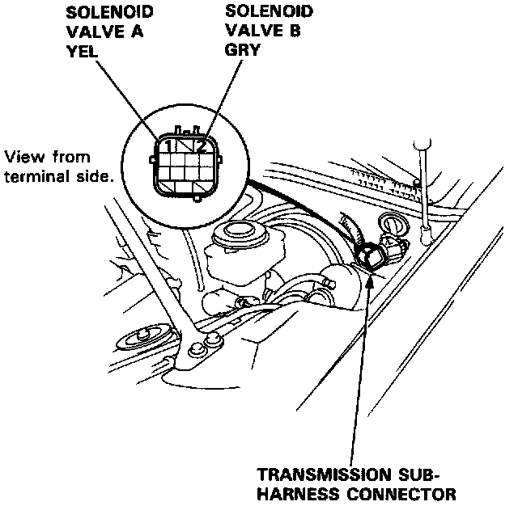
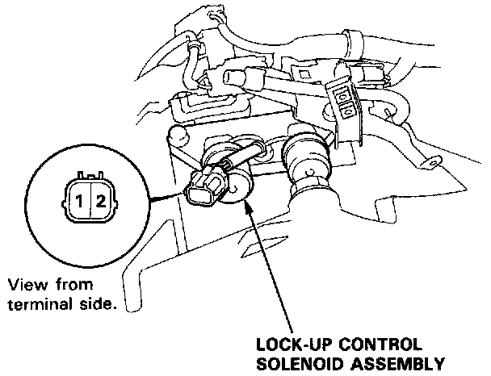

Component Test
Lock-up Control Solenoid Valve TestNOTE: Lock-up control solenoid valves A and B must be removed/replaced as an assembly.
1. Disconnect the transmission sub-harness connector.

2. Measure the resistance between the No.1 terminal (SOL. V A) of the transmission sub-harness connector and body ground and between the No.2 terminal (SOL.V B) and body ground.
STANDARD: 12 - 24 Ohms
3. If the resistance is out of specification, disconnect the connector from the lock-up control solenoid valve A/B.

4. Measure the resistance between the No.1 terminal (SOL. V A) of the lock-up control solenoid valve connector and body ground and between the No.2 terminal (SOL. VB) and body ground.
STANDARD: 12 - 24 Ohms
5. If the resistance is OK, replace the transmission sub-harness.
6. Replace the lock-up control solenoid valve assembly if the resistance is out of specification.
7. Connect the No.1 terminal of the lock-up control solenoid valve connector to the battery positive terminal. A clicking sound should be heard. Connect the No.2 terminal to the battery positive terminal. A clicking sound should be heard.
8. If not, check for continuity between the ECU E25 or E26 harness and body ground. Refer to Trouble Code Charts for Code 1 and Code 2.
9. Replace the lock-up control solenoid valve assembly if there is continuity between the ECU E25 or E26 harness and body ground. Refer to Trouble Code Charts for Code 1 and Code 2.